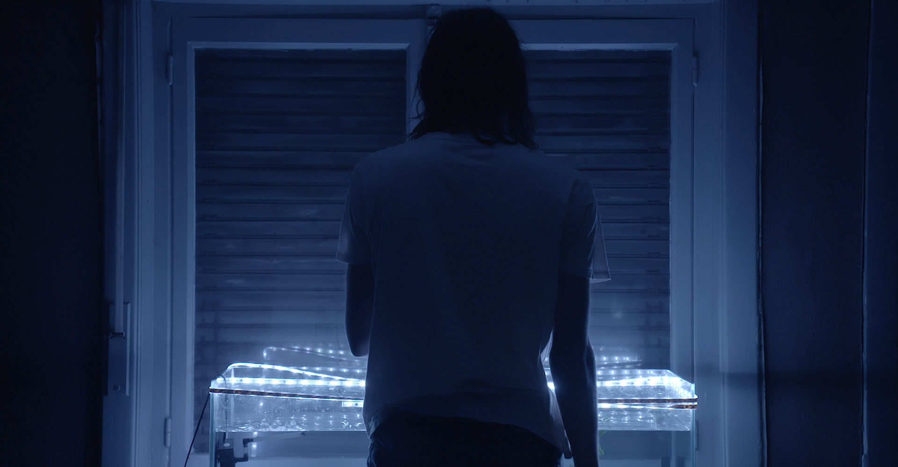
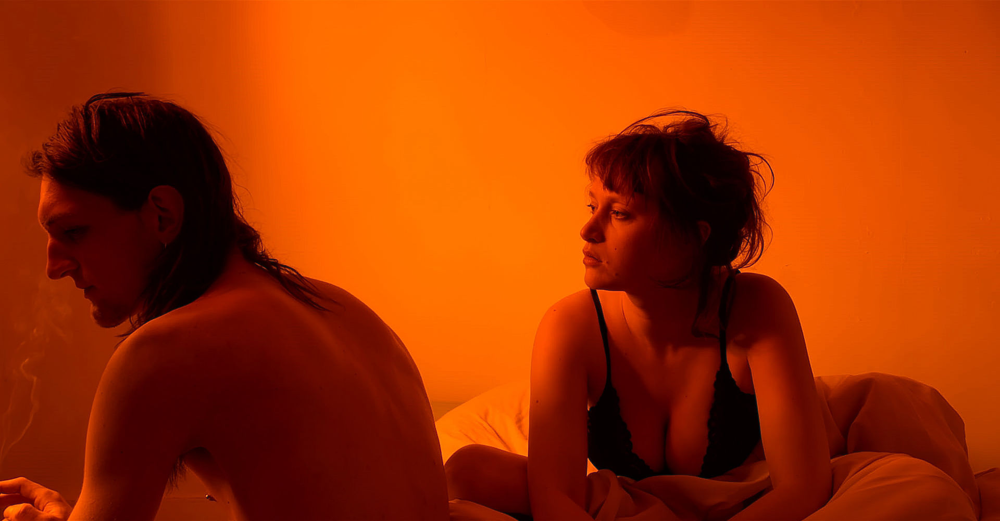
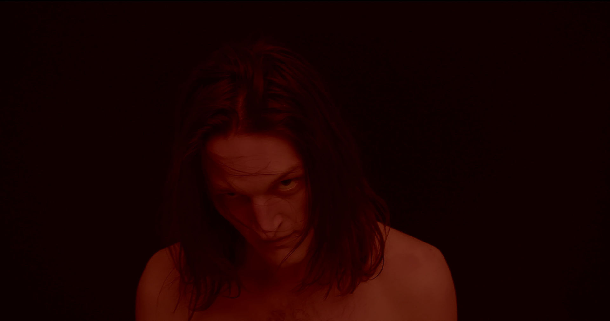

Gabriel Descending is een psychologisch drama waarin de ervaring centraal staat. Door middel van geluid, de soundtrack, strakke composities en bewust kleurgebruik willen we een sfeer creëren die de toeschouwer gevangen houdt.


VERHAAL
Doorheen het verhaal volgen we Gabriel die langzaam zijn grip op de realiteit verliest. Hij wordt geteisterd door hallucinaties die hij als visoenen ervaart. Hierdoor verliest hij zijn connectie met zijn omgeving en raakt hij meer en meer verstrikt in een isolement. We zien hoe de mensen rondom Gabriel reageren op zijn gedrag en hem beginnen te verstoten.

CASSANDRA
GABRIELDESCENDING is een vertaling van een gevoel. Een noodkreet om hulp. We stevenen af op een afgrond maar iedereen wie je waarschuwt schildert je af als een gestoorde.
De personages in GABRIELDESCENDING zijn gebasseerd op Griekse Mythologie. Specifieker op het verhaal van Cassandra.
Het hoofdpersonage Gabriel is gebasseerd op Cassandra. Zij was de dochter van koning Priamus, de koning van Troje. Daarnaast was ze een priesteres van Apollo. Door haar betoverende schoonheid was ze door alle mannen geliefd. Hierdoor viel ze ook in het oog van Apollo, de zonnegod. Apollo deed haar een voorstel. Hij zou haar de gave geven de toekomst te kunnen zien als ze met hem het bed zou delen. Eenmaal ze deze gave kreeg zag Cassandra de val van Troje door toedoen van de Grieken met Apollo aan hun zijde. Hierdoor weigerde ze seks met hem. Apollo was furieus en vervloekte haar dat niemand haar ooit zou geloven. Toen de Grieken het Paard van Troje aan de poorten van de stad achterlieten probeerde Cassandra hysterisch de Trojanen te overtuigen om het houten paard te verbranden. De Trojanen zagen haar als een gekkin en beslisten alsnog het paard binnen te nemen. Die nacht werd Troje tot assen herleid. Tijdens de val van Troje vlucht ze naar de tempel van Athena, een Griekse godin waar ze een haat-liefde verhouding mee heeft. Aan de voet van Athena's standbeeld zakt ze ineen.
Athinea is gebasseerd op de Griekse godin Pallas Athena. Zij is godin van de wijsheid. Cassandra en Athena zijn niet elkaars grootste fans, maar ergens is er een aantrekkingskracht.
Stan is gebasseerd op Ajax de Kleine. Deze was een Griekse held in de Trojaanse Oorlog. Hij compenseerde voor zijn kleine gestalte door middel van machogedrag en stoerdoenerij. Na de val van Troje valt hij de tempel van Athena binnen waar Cassandra aantreft en haar verkracht. Athena is razend. Wanneer Ajax de Kleine terug naar Griekenland vaart zinkt ze zijn schip. Ajax de Kleine verdrinkt.